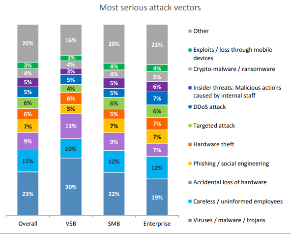
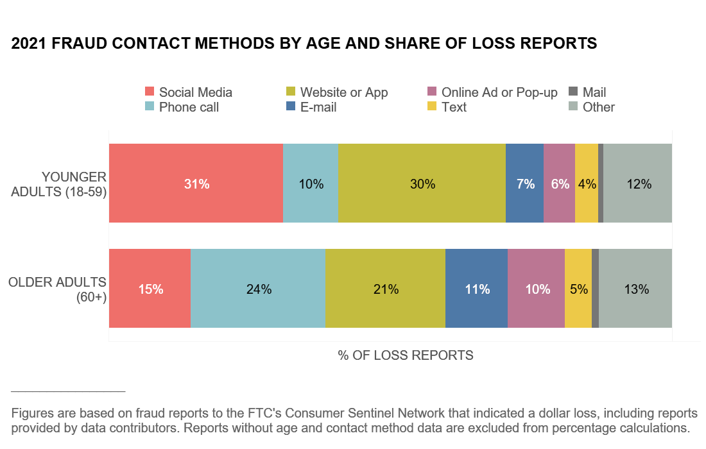

| Section | Link |
|---|---|
| Abstrdfact |
Data breaches are a major threat to security of both individuals and organisations. Losses from such incidents can include financial, legal, reputational and regulatory. We start by covering the history of cyber attacks, and how they can be organised into the three main categories: Credentials, Human Nature and misconfiguration, before delving in detail on each of the three categories. For credentials, the problems with passwords, MFA and disadvantages of MFA are covered. For human nature, both the victim and perpetrator sides are covered. In addition, various examples are mentioned. For all categories, statistics and explanations are referenced appropriately. We also discuss some mitigations to reduce the likelihood of such incidents occurring in the future.
The world’s first cyber-attack, the “Morris Worm” began on 2nd November 1988, causing a national slowdown of the US network (FBI, n.d.). This was a revelation in the world of computer security highlighting the societal importance of computers. Between 2001-2021, there was a 1517% increase in affected individuals (Griffiths, 2023). Common causes of data breaches are:
Credentials are defined as one or more from a password, token or certificate to verify user identity (NCSC, n.d.).
The cheapest to use credentials are usernames and passwords. However, they are vulnerable to approaches like social engineering, brute force, and credential stuffing (CPNI, 2015). A brute force attack is when random characters are used against a password input, to eventually obtain the correct password. As passwords have a minimum but not a maximum length, success is rare. As 85% of people reuse passwords (Bitwarden, 2023), credential stuffing attacks, where previously exposed passwords are abused, are more successful.
MFA is the use of at least 2 factors for successful authentication to prevent access even if the password is compromised. Authentication factors are one of three concepts: Something you know, have or are. The first is a PIN or password. The second is an OTP (One-Time Password) from an app, SMS, or hardware device. The third factor is biometrics, such as facial/iris/fingerprint, which is invulnerable to theft.
Depending on the additional factor used, there can be disadvantages. Firstly, if SMS codes are used, it is vulnerable to SIM swaps, when an attacker impersonates the billpayer to activate a new sim to intercept codes and bypass MFA. Secondly, due to phishing, where the password and code are intercepted and forwarded, most OTP factors can be rendered useless. Currently, the only unphishable method is to use a hardware token, like YubiKeys, which verify both the user and the server, with the FIDO2 protocol (Alqubaisi, et al., 2020).
Human nature is a cause of data breaches. They include, Kindness, truth-telling, and responsibility/negligence from the victim and motivations, insider threat and social engineering from the perpetrator side.
Altruism was observed in humanity over the past tens of thousands of years (Taylor, 2020), and can be linked to cybercrime through “tailgating” attacks. This is when an unauthorised person “follows” the victim into restricted areas (Fortinet, n.d.). Responsibility is a major factor in cyber security. In many companies, most employees are not in IT (Sutherland & Powell, 2023) and believe that cybersecurity is not their problem. However, 23% of attacks were the result of careless/uninformed employees, see Figure 1.
Figure 1: The Human Factor in IT Security (Kaspersky, 2017)
Negligence is also a factor. Numerous instances of misdelivery occurred, where information is sent to the wrong recipient (Verizon, 2018). In 2015, the email addresses of HIV patients were exposed to each other twice, by the sender putting the emails in the “To” field, instead of “BCC”. The ICO (Information Commissioner Office) fined the NHS Trust £180,000 (Chris Fox, 2016).
On the other hand, the main causes from the perpetrator side are insider threat and social engineering. The four factors of insider threat can be explained by the “MICE” acronym (Burkett, 2013):
Money is a valuable commodity in society, making the insiders susceptible to being “bought” by those
willing to pay to get information. Ideology can cause issues when an organisation violates valued
principles, enticing them to leak or sabotage. Blackmail is effective when an insider has kompromat,
and threats to leak the material are made to force compliance. Finally, Ego matters, as insiders
sometimes consider themselves to be “above the law,” making it easier for an attacker to manipulate
such insider to leak information, while making them feel good. Secondly, social engineering is a
major problem, where human interaction is abused to capture information (CISA, 2021). Major events
such as elections, holidays and disasters are used to gain information. For example, when the NHS
were deploying new COVID-19 vaccines, scammers spammed the population with texts like this:
NHS: We have identified that you are eligible to apply for your vaccine. For more information and to apply, follow here: uk-application-form.com
(Ofcom, 2022).
Elderly people are more vulnerable to scams by email, text or phone call over younger people (see Figure 2). In all methods, older adults (60+ years) had a higher share of loss reports, with 11%, 5%, and 24% respectively, compared with 7%, 4% and 10% for the younger adults (18-59) (FTC, 2022).
Figure 2: Who experiences scams? A story for all ages (FTC, 2022)
The final category of data breach causes is misconfiguration, defined as “An incorrect or suboptimal configuration of an information system or system component that may lead to vulnerabilities.” (NIST, n.d.). These are the most common causes, as complex plans are not needed, but simple methods are used instead, comparable to leaving a door unlocked, and a thief trespassing.
The top ten misconfigurations can be narrowed to three issues: default configurations, weak/broken access control and poor patch management (Gatlan, 2023). Numerous software products have default configurations, geared towards convenience over security, and must be “hardened” to prevent breaches. Stinginess and convenience lead to access misconfigurations E.g., weak passwords are used for efficiency, or when software licencing is per user, but to reduce costs, many users share a single account, resulting in no accountability, as countless people had access. Developers create “patches” to repair “holes”, which are identified vulnerabilities. If these are not applied regularly, the likelihood of exploitation increases, easily fixed with patching.
In conclusion, the human aspect is more important than assumed, as recent systems are so secure, the user is the weakest link. Secondly, there is a fine line between convenience and security. Increased security is positive until the point of interruption, leading to flaws created for efficiency, making improvements futile.
Alqubaisi, F., Wazan, A. S., Ahmad, L. & Chadwick, D. W., 2020. Should We Rush to Implement Passwordless Single Factor FIDO2 based Authentication?. Dubai, IEEE.
Bitwarden, 2023. Security habits around the world: A closer look at password security statistics. [Online]
Available at: https://bitwarden.com/blog/a-closer-look-at-password-statistics/
[Accessed 22 November 2023].
Burkett, R., 2013. An alternative framework for agent recruitment: from MICE to RASCLS. Studies in Intelligence, 57(1), pp. 7-17.
Chris Fox, 2016. NHS Trust fined for 56 Dean Street HIV status leak. BBC News, 9 May, p. 1.
CISA, 2021. Avoiding Social Engineering and Phishing Attacks. [Online]
Available at: https://www.cisa.gov/news-events/news/avoiding-social-engineering-and-phishing-attacks
[Accessed 22 November 2023]